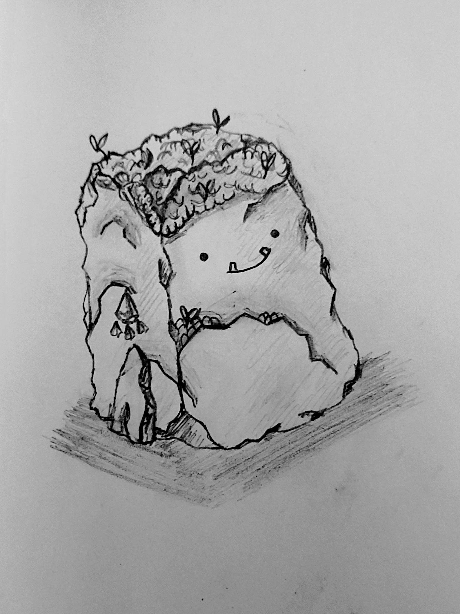
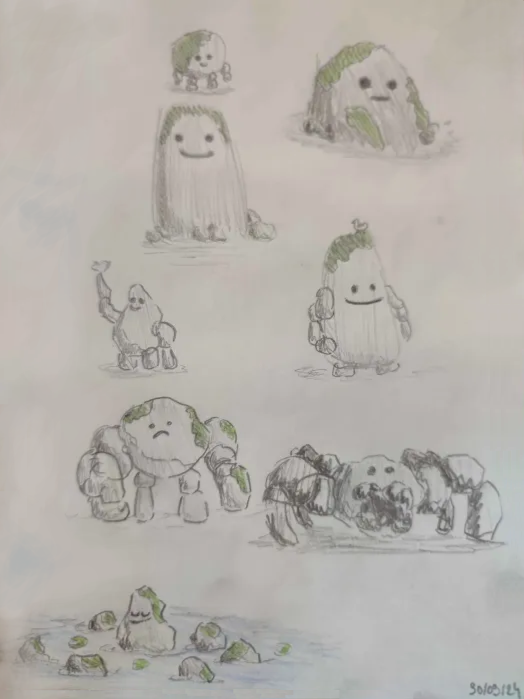

ArtiCalluMarchus
L'ArtiCalluMarchus, de son nom commun Caillou Marcheur est une Artiforme qui est créé à partir d'un rocher de taille extrèmement variable.
Le ou les créateur.s des ArtiCalluMarchus sont encore inconu.s à leur actuelle, cependant la stabilité de leur espèce laisse à penser qu'il sagit d'un ou plusieur très bon mage en animation et encore en activité.
L'ArtiCalluMarchus n'est ni plus ni moins qu'un rocher. Il est de taille extrement variable en fonction des individus. Il possède peux posséder des mains et des pieds forcher de cailloux plus petits, qu'il manipule par magie.
Les membres de cette espèce n'ont pas de trait de caractères particulier, ils ne vivent pas en société et ne se connaissent pas entre eux.
La plupart d'entre eux accueille un écosysteme verdoyant sur leur dos et respectent la nature.
L'ArtiCalluMarchus est en moyenne asser robuste et fort, mais très peu agile et minutieux.
IL ont la capacité de manipuler les rochers au alentour. A peu près n'importe quel rocher dans sont champ de vision peux etre déplacé mais la réussiste dépend grandement de la distance et de la taille.
Certain individus n'arrivent pas à manipuler les rochers, d'autre y parviennent seulement pour ceux leurs servant de membres.
Cette espèce n'a pas besoin de se nourrir, mais se mouvoir est très énergivore. Par conséquent cette espèce a besoin d'un long sommeil, il dorment environ 40% de la journée
Il n'y a aucun mode de reproduction connu pour cette espèce, a priori, aucun membre de cette espèce peut animer un rochers pour créer individu.
L'apparition de cette espèce est encore très méconnus.
Cette espèce n'est associé à aucun évènement majeur connu.
L'espèce fut découverte par le chercheur Palpi
